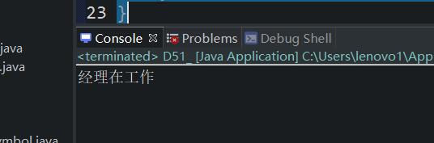
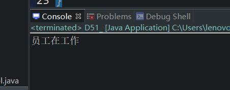
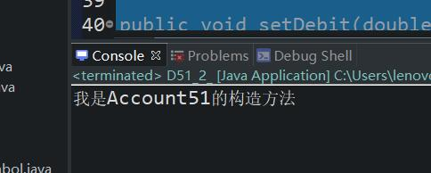

一、super关键字
我们先看一个例子
package com.bjpowernode.java_learning;
public class D51_ {
public static void main(String[] args) {
Manager51 m1 = new Manager51();
m1.m1();
}
}
class Employee51{
//成员函数
public void work() {
System.out.print("员工在工作");
}
}
class Manager51 extends Employee51{
public void work() {
System.out.print("经理在工作");
}
public void m1() {
this.work();
}
}

我们从上面的代码可以看出来，这个Manager51类继承了Employee51这个类，并且还重写了一个函数work，从显示的结果也可以看的出来，返回了被改写后的内容，现在我们有个需求就是让Manager51这个类也返回“员工在工作”
我们改写子类Manager51
class Manager51 extends Employee51{
public void work() {
System.out.print("经理在工作");
}
public void m1() {
super.work();
}
}
把this改成了super,就达到了调用父类的目的
二、注意点
1.super不是引用类型，super中存储的不是内存地址，super指向的不是父类对象（这一点一定要和this关键做对比）
2.super代表的是当前子类对象中的父类型特征。
3.什么时候使用super这个关键字
例如：子类和父类中都有某个数据，如果要在子类中访问父类的某一个属性或者方法，那么我们就需要使用super.
4.super可以用在什么地方
（1）super可以用在成员方法中
（2）super可以用在构造方法中
（3）super是不可以用在静态方法中。（和this相同都不能用在静态上下文中）
5.super关键字用在构造方法中语法
super(实参）
（1）作用：通过子类的构造方法去掉用父类的构造方法，其真正的作用就是给当前的子类对象中的父类型特征赋值。
（2）语法规则：一个构造方法第一行如果没有this(...);也米有显式的去调用（2）super(...);系统会默认调用super();
（4）super(...);的调用只能放在构造函数的第一行
（5）super(...)和this(...)不能共存
（6）super(...);调用了父类中的构造方法，但是不会创建父类对象。
（7）在java语言中只要是创建了java对象，那么Object中的无参数构造方法一定会执行。
（8）构造方法执行不一定会创建对象。
package com.bjpowernode.java_learning;
public class D51_2_ {
public static void main(String[] args) {
DebitAccount51 d1 = new DebitAccount51();
}
}
class Account51{
//
private String actno;
private double balance;
public String getActno() {
return actno;
}
public void setActno(String actno) {
this.actno = actno;
}
public double getBalance() {
return balance;
}
public void setBalance(double balance) {
this.balance = balance;
}
public Account51() {
System.out.println("我是Account51的构造方法");
}
public Account51(String actno,double balance) {
this.actno = actno;
this.balance = balance;
}
}
class DebitAccount51 extends Account51{
private double debit;
public double getDebit() {
return debit;
}
public void setDebit(double debit) {
this.debit = debit;
}
public DebitAccount51() {
super();//这里写不写这个super()都行，不写默认写。会调用父类的构造函数
}
public DebitAccount51(String actno,double balance,double debit) {
super(actno,balance);//因为这两个参数在父类中是私有的成员变量，所以在子类中不能直接赋值，
//所以采用super(参数)的方式进行调用
this.debit = debit;
}
}

五、源码：
D51_SuperKeywordAnalysis.java
D51_2_SuperInConstructionMethod.java
地址：
https://github.com/ruigege66/Java/blob/master/D51_SuperKeywordAnalysis.java
https://github.com/ruigege66/Java/blob/master/D51_2_SuperInConstructionMethod.java
2.CSDN：https://blog.csdn.net/weixin_44630050（心悦君兮君不知-睿）
3.博客园：https://www.cnblogs.com/ruigege0000/
4.欢迎关注微信公众号：傅里叶变换，个人公众号，仅用于学习交流，后台回复”礼包“，获取大数据学习资料